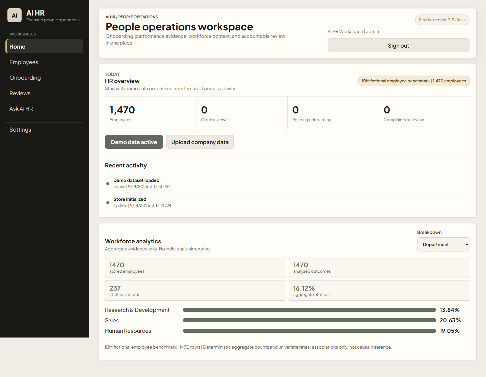

SOFTWARE & AI / LIVE DEMO
AI HR 2
A people-operations workspace that pairs AI assistance with evidence, privacy controls and accountable human review.

The problem
HR teams need a coherent view of employee records, onboarding, reviews and routine questions, while sensitive decisions still require accountable human judgment.
What I built
Five focused workspaces cover Home, Employees, Onboarding, Reviews and Ask AI HR. The application combines a Gemini assistant with searchable records, aggregate analytics, approval gates and audit trails.
Technology
Node.js, JavaScript, PostgreSQL and the Gemini API. The repository includes local setup, tests and deployment documentation.
Evidence and limits
The screenshot and feature descriptions come from the linked repository. The dashboard uses fictional demo data, and its aggregate rates are descriptive, not causal or individual risk scores. AI-generated HR content requires qualified human review; this portfolio check did not independently test production workflows.